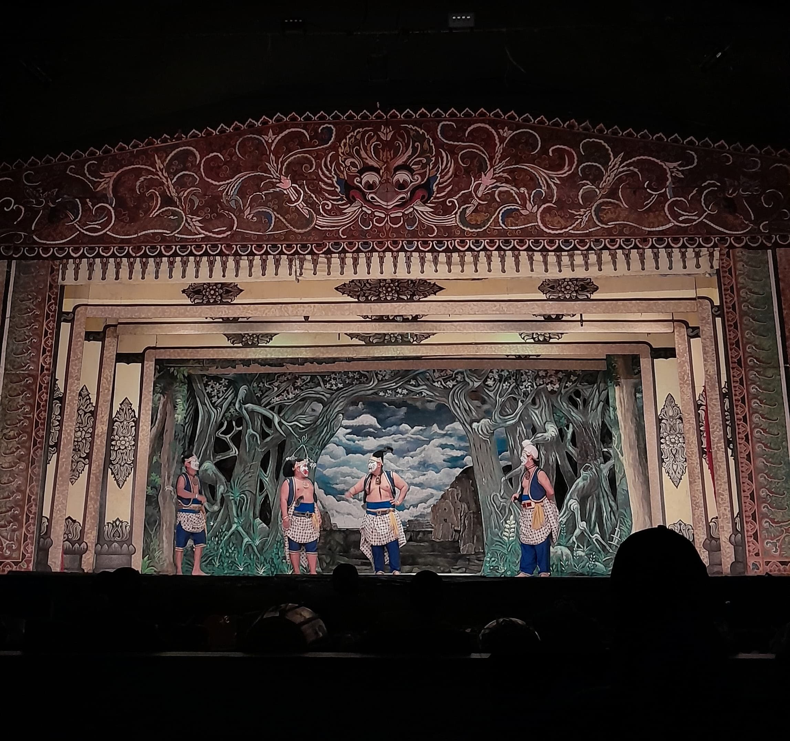
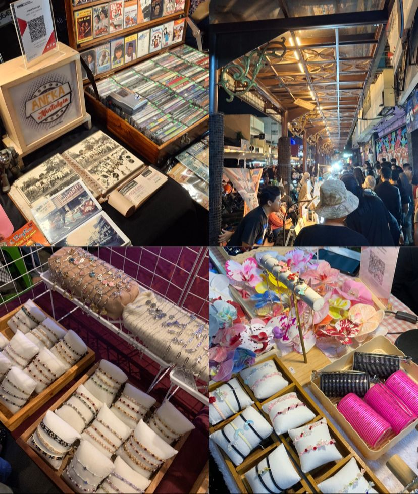
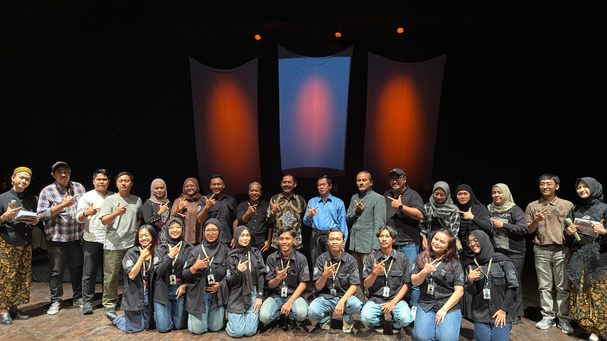
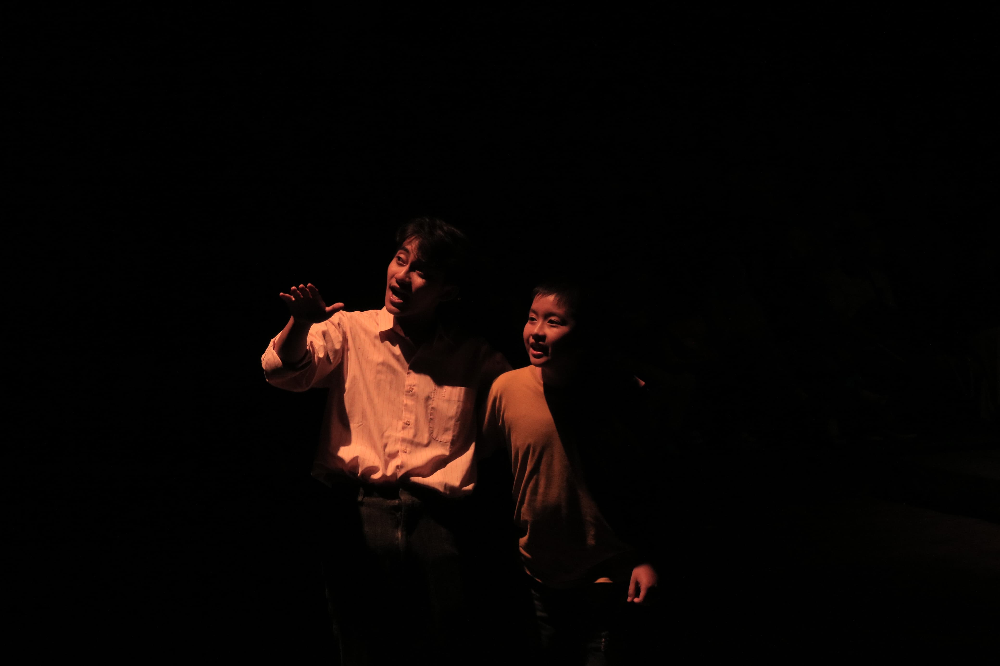
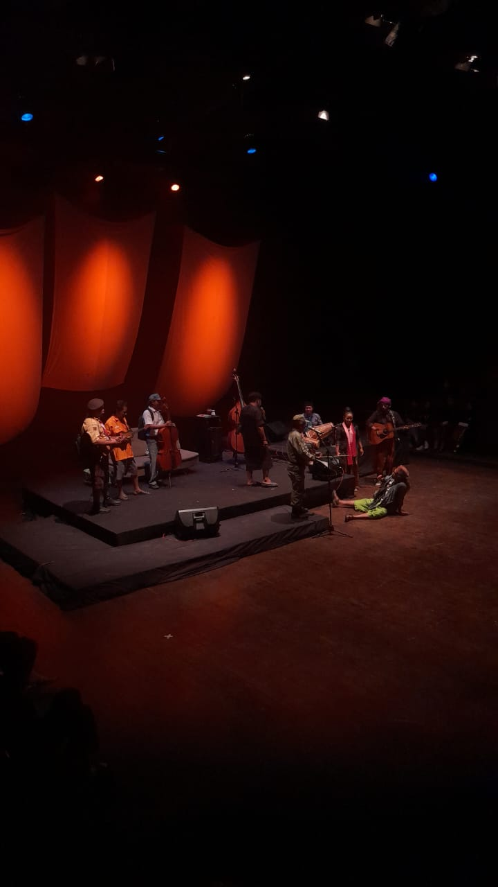
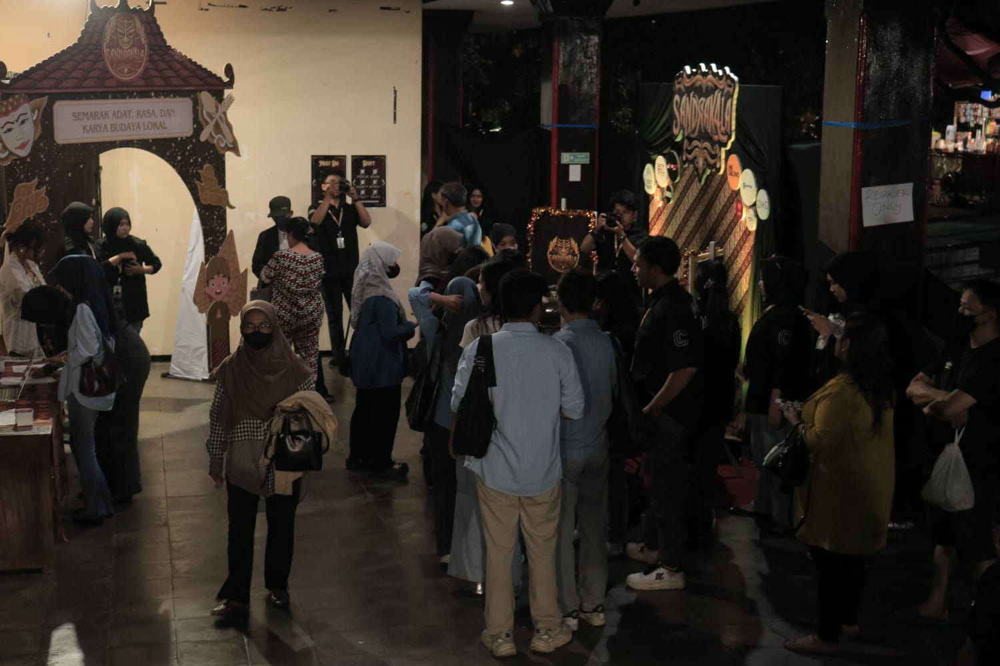

Hiburan/Event
Place To Go Solo: Kesenian Wayang Orang Sriwerdari

Wayang orang atau wayang wong merupakan sebuah drama tari traditional jawa yang tampil menggunakan kostum yang cukup rumit, gerakan eksprektif, serta diiringi dengan musik gamelan/tradisional. kesenian wayang orang ini sering kali berisi tentang sebuah cerita kisah nyata dari mahabarata dan ramayana. Pertunjukan wayang orang sriwerdari merupakan salah satu pertunjukan seni traditional dikota solo yang digelar malam hari ditaman sriwerdari kota solo dengan harga tiket masuk yang cukup murah yaitu Rp 20.000,00 kita sudah bisa menyaksikan pertunjukan wayang wong.
Perjunjukan Wayang wong yang diadakan pada hari Rabu,11 juni 2025 pertunjukan malam itu bertemakan tentang kisah nyata dari mahabarata yang diolah dengan sedikit sentuhan khas dari kota solo. Di setiap pertunjukan wayang wong tidak hanya ditampilkan dengan bahas jawa saja tapi juga ditampilkan terjemahannya dalam bahasa indonesia di layar proyektor sehingga memudahkan penonton memahai alur ceritanya. Selain itu pertunjukan wayang wong berdurasi 2-3 jam namun pertunjukan tersebut dikemas dengan menarik dan penuh guyonan sehingga penonton tidak merasa bosan/jenuh saat menonton.
Hiburan wayang wong sriwerdari tidak hanya menawarkan hiburan saja tetapi juga memberikan sebuah pembelajaran atau nilai nilai kehidupan yang dapat kita ambil. Pertunjukan pertunjukan wayang wong sriwerdari sudah dijadwalkan pertunjukannya dan bisa kita lihat diakum instagramnya yaitu @wayang_orang_sriwerdari.
Ditulis oleh: Vita Devi Rahmawati
Night Market : Suasana Weekend di Kota Solo

Suasana weekend di kota solo semakin seru dengan ada nya night market atau bisa disebut juga pasar malem yang ada di Jl. Diponegoro, Keprabon, Kec. Banjarsari, Kota Surakarta, Jawa Tengah atau sering juga disebut gatsu merupakan sebuah pasar yang beroprasi pada malam hari yaitu malam sabtu dan malam minggu, night market tersebut mulai buka pada jam 18.00 WIB. Night market sendiri merupakan sebuah pasar yang beroprasi pada malam hari dan sering kali menjadi daya tarik wisata karena suasananya yang unik serta berbeda dengan pasar pada umumnya.
Didalam night market yang ada dikota solo tersebut menawarkan berbagai macam barang dagangan dari makanan dan minuman khas kota solo, snack, baju-baju batik,jadul danmoderen juga tersedia. Berbagai macam aksesoris dari gelang, kalung, jepit rambut dan cincin. Selain itu kita juga bisa meminta riquest model aksesoris sesuai yang kita inginkan seperti saat membeli gelang kita bisa riquest nama yang akan ditulis, serta ada berbagai macam kerajinan khas kota solo.
Selain itu kita juga bisa menikmati hiburan musik dan seni yang ada sambil menikmati angin malam dikota solo. Night market tidak hanya didatangi oleh anak anak kecil saja tapi banyak orang tua, anak muda solo dan perantau yang ada dikota solo khususnya mahasiswa mahasiswa berbagai universitas yang ada disolo untuk menikmati suasana santai dimalam hari.
Ditulis oleh : Vita Devi Rahmawati
Sandrakala : Persembahan Megah Dari Mahasiswa Komunikasi Terapan Angkatan 2023

Surakarta, 9 Juli 2025 - Kelas C Program Studi Komunikasi Terapan Universitas Sebelas Maret dengan bangga mengumumkan pelaksanaan Festival Budaya dan Kuliner Sandrakala 2025 yang telah terselenggara pada Kamis, 3 Juli 2025 di Taman Budaya Jawa Tengah, Surakarta. Acara ini diselenggarakan sebagai bagian dari pemenuhan nilai akademis mahasiswa Program Studi Komunikasi Terapan pada semester 4, sekaligus sebagai tugas akhir yang diberikan oleh para dosen.
Festival ini dihadiri oleh Mantan Wali Kota Surakarta periode 2016-2021, Bapak FX Hadi Rudyatmo, yang hadir sebagai perwakilan penikmat seni. Selain itu, festival ini juga dihadiri oleh 30 tamu undangan VIP, yang terdiri dari Wakil Dekan Fakultas Sekolah Vokasi, dosen Program Studi Komunikasi Terapan, perwakilan sponsor, dan media mainstream, serta 300 penonton reguler. Para hadirin dan tamu undangan duduk berdampingan di kursi teater yang telah disediakan.

Acara ini dimeriahkan oleh penampilan drama teater dari Teater Iris, sebuah komunitas pertunjukan seni yang asli dari pemuda Surakarta. Teater Iris berhasil mengawinkan drama bertema permasalahan kehidupan anak muda dengan alunan musik yang mereka ciptakan sendiri. Selain itu, grup keroncong ternama asal Solo, OPM (Orkes Plasu Minimal), juga turut memberikan sihir alunan musik keroncong yang dipadukan dengan dagelan khas mereka.

Sandrakala tak hanya menyajikan penampilan keren dari Keroncong OPM dan Teater Iris saja, namun ada 6 tenant kuliner yang disajikan khusus untuk para pengunjung. Tenant ini dihadirkan oleh panitia Sandrakala guna menarik minat pengunjung untuk datang di event ini. Hal ini pun menjadi sesuatu yang menguntungkan bagi para penjual untuk mempromosikan jualan mereka ke ranah yang lebih luas dan para penjual pun mendapatkan feedback langsung dari pengunjung berupa masukan perihal rasa, pelayanan, dan harga.

Sebagai penutup acara, panitia Sandrakala telah menyediakan photobooth dan mapping untuk para pengunjung mengabadikan momen. Dikalangan anak muda saat ini, photobooth dan mapping menjadi hal yang cukup populer pada sebuah event. Selain memiliki daya tarik estetika, photobooth dan mapping juga mampu menciptakan suasana yang lebih berkesan. Photobooth juga digunakan demi memperkuat identitas event Sandrakala bahkan sponsor yang telah membantu kelancaran event Sandrakala.